Contents
% Examples using unwrap3 % Allows different values for correcting up and down jumps close all
The data
What the data looks like
% This is what we're assuming clean data roughly looks like % (oversimiplified a bit) % x is distance % y is phase in degrees x = 1:18; y = linspace(0, -480, numel(x)); figure subplot(4,1,1) plot(x,y) xlabel('Distance') ylabel('Phase, deg.') axis([0, 20, -600, 200]) title('Clean data') % Raw data can only be recorded between 0-360 degrees, so clean data in % it's raw form would look like this. y(y<-360) = y(y<-360)+360; subplot(4,1,2) plot(x,y) xlabel('Distance') ylabel('Phase, deg.') axis([0, 20, -500, 200]) title('Wrapped data') % This ambuiguity can be corrected by finding jumps >180 and correcting % them by 360 in the opposite direction % Additionaly, the laser has another 180 ambuiguity that occurs randomly idx = randi(numel(x),1,randi(4)+2); y(idx) = y(idx)+90; y(y<-360) = y(y<-360)+360; subplot(4,1,3) plot(x,y) xlabel('Distance') ylabel('Phase, deg.') axis([0, 20, -500, 200]) title('Wrapped data + 90^o ambuiguity') % And on top of this, there's expermimental noise y = y+randn(1,numel(x))*20; y(idx) = y(idx)+90; y(y<-360) = y(y<-360)+360; subplot(4,1,4) plot(x,y) xlabel('Distance') ylabel('Phase, deg.') axis([0, 20, -500, 200]) title('Wrapped data + 90^o ambuiguity + noise')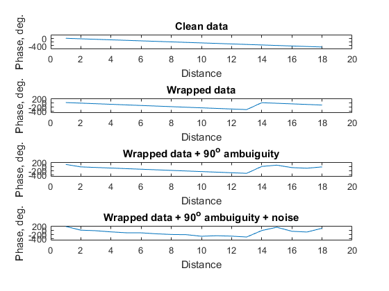
Real data
Example of some real data
pd = [20.5266666666667, ... 160.786666666667, ... 35.4016666666667, ... 23.3403333333333, ... 15.5520000000000, ... 122.297333333333, ... -4.40333333333334, ... 153.523333333333, ... 27.2330000000000, ... 38.8366666666667, ... 42.6206666666667, ... 182.884900000000, ... 170.231000000000, ... 161.493333333333, ... 129.882666666667, ... 100.144333333333, ... 84.9866666666667, ... 14.9004333333333]; figure plot(x, pd) axis([0, 20, -500, 200]) xlabel('Distance') ylabel('Phase, deg.')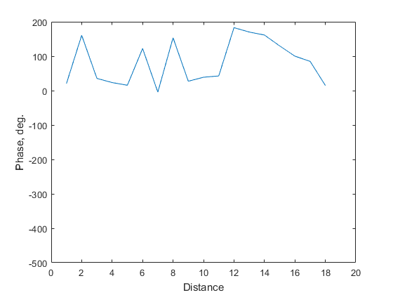
The problem
Find the real phase trajectory of pd (or restore the known, original phase trajecotry of fake data in y)
figure; hold on plot(x, y) plot(x, pd) axis([0, 20, -500, 200]) xlabel('Distance') ylabel('Phase, deg.') legend('y', 'pd')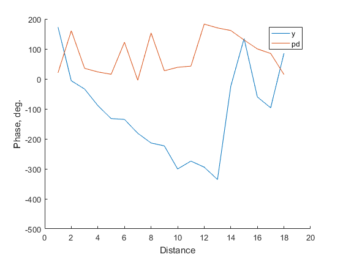
Step 1: Single, simple unwraps
Unwrap 360 and 180 degreee ambuiguties in seperate steps params.upThresh and params.downThresh are the up and down thresholds for correction (the difference between point n and n-1:). downThresh is triggered if the next point goes down buy more than this value, and the next point will be corrected UP by downCor. Because phase is rolling off, the downThresh should be greater than the upThresh. Eg. If phase rolls off -20 deg between each point, upThresh should be 180+-20 = 160 and downThresh should be -180+-20 = -200 Unwrap 3 also normalises the first few points to roughly 0
rhoPhase = -20; params.plotOn = 1; % Unwrap large phase jumps (360o jumps) params.upThresh = 180+rhoPhase; params.downThresh = -180+rhoPhase; params.upCor = -360; params.downCor = 360; yU = unwrap3(y, params); pdU = unwrap3(pd, params); % Unwrap laser ambuguity (180o jumps) params.upThresh = 90+rhoPhase; params.downThresh = -90+rhoPhase; params.upCor = -180; params.downCor = 180; yU2 = unwrap3(yU, params); pdU2 = unwrap3(pdU, params); % This works well for y (with low noise) figure; hold on subplot(2,1,1) plot(y) plot(yU) plot(yU2) legend({'Wrapped', 'Unwrapped pass 1', 'Unwrapped pass 2'}) title('y') axis([0, 20, -500, 200]) subplot(2,1,2) plot(2:numel(x), diff(yU2)/(max(yU2)-min(yU2))*100, 'r') title('Difference between points, scaled by range') ylabel('Diff') xlabel('Distance') axis([0, 20, -100, 100]) % But for pd there are a few points that perhaps should be been corrected, % but didn't hit threshold because of noise figure subplot(2,1,1); hold on plot(pd) plot(pdU) plot(pdU2) legend({'Wrapped', 'Unwrapped pass 1', 'Unwrapped pass 2'}) title('pd') axis([0, 20, -500, 200]) subplot(2,1,2) plot(2:numel(x), diff(pdU2)/(max(pdU2)-min(pdU2))*100, 'r') ylabel('Diff') xlabel('Distance') axis([0, 20, -100, 100])
Warning: Ignoring extra legend entries.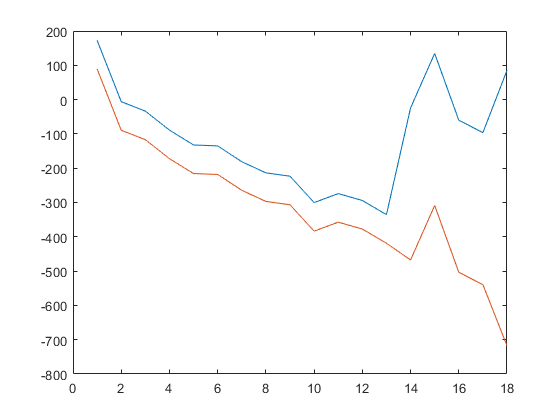 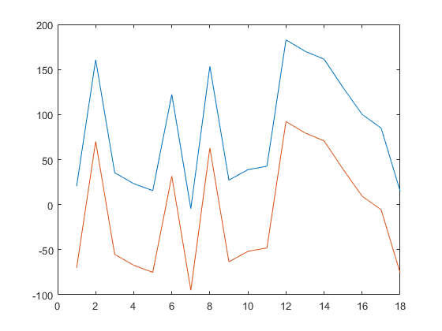 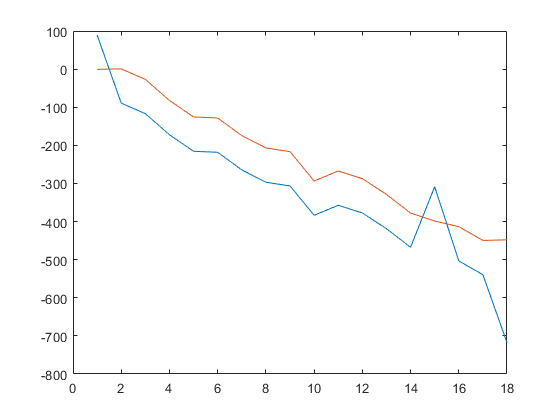 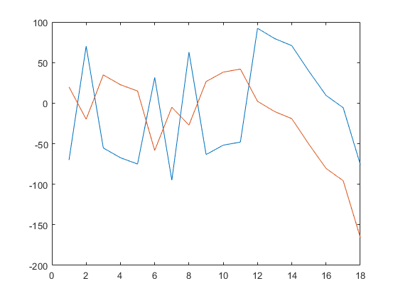 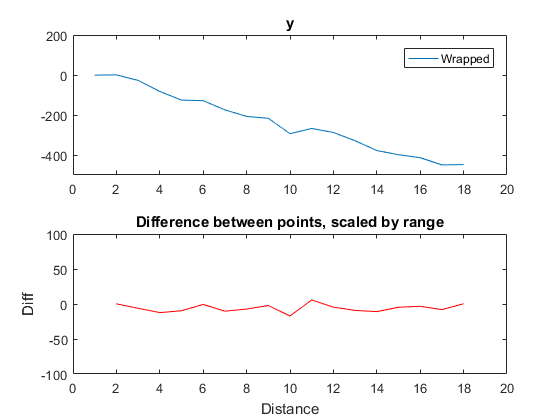

Experimental noise
At this point if the unwrap is known to be correct, we can calucalte the experimental noise at each point. For y, even if we pretend we don't know the rate of roll off, we can caluclate the noise at each point as each point is
disp(diff(pdU2)/(max(pdU2)-min(pdU2))*100 - 0) % However, for pd, we don't know if we've missed unwrap steps, or where % they would be % One possible approach to dealing with this is to simulate the noise at % each point and see what the resulting unwraps look like. We can assume, % that with enough simulations, one will coincidenally exactly cancel the % experimental noise at each point - but how to know which one?
Columns 1 through 7 -19.1315 26.2926 -5.8065 -3.7494 -35.2660 25.6592 -10.6265 Columns 8 through 14 25.8567 5.5862 1.8217 -19.1295 -6.0918 -4.2065 -15.2179 Columns 15 through 17 -14.3165 -7.2972 -33.7407
Add noise (before unwrapping) and unwrap again
Run for both pd and y - if this works we should be able to recover y and compare it to the known original
% Assumed real phase roll off roPhase = 20; params.plotOn = 0; its = 1000; % Noise parameters mu = 0; sig = 13; % ? % Output matrix (it x pos) nPos = numel(x); pdUWs = NaN(its, nPos); yUWs = NaN(its, nPos); for it = 1:its noiseVec = randn(1, nPos)*sig + mu; pdN = pd + noiseVec; yN = y + noiseVec; % Unwrap large phase jumps params.upThresh = 90+roPhase; params.downThresh = -90+roPhase; params.upCor = -360; params.downCor = 360; pdNU = unwrap3(pdN, params); yNU = unwrap3(yN, params); % Unwrap laser ambuguity params.upThresh = 75; params.downThresh = -75; params.upCor = -180; params.downCor = 180; pdUWs(it,:) = unwrap3(pdNU, params); yUWs(it,:) = unwrap3(yNU, params); end h(1) = figure; subplot(1,4,1:3); hold on plot(yUWs') xlabel('Distance') ylabel('Phae, deg.') title('y') subplot(1,4,4) histogram(yUWs(:,end),100) a = gca; a.View = [90 -90]; a.XTickLabel = []; ylabel('Count') h(2) = figure; subplot(1,4,1:3); hold on plot(pdUWs') xlabel('Distance') ylabel('Phae, deg.') title('pd') subplot(1,4,4) histogram(pdUWs(:,end),100) a = gca; a.View = [90 -90]; a.XTickLabel = []; ylabel('Count')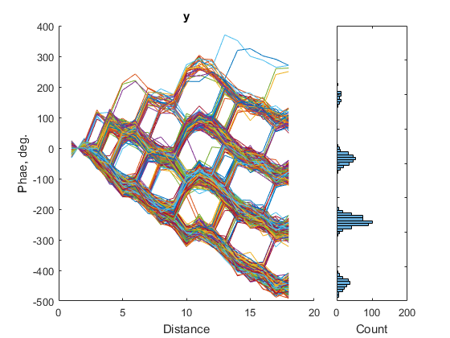 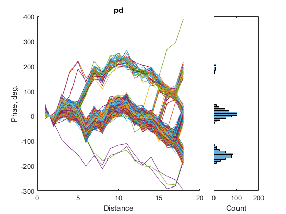
Select best path
So there a quite a few possible phase trajectories, not normally distributed overall but perhaps normally distributed within possible groups But which is the correct trajectory?
% Minimise sum of jumps? - Smoothest path % Get differences between each position dfs = diff(pdUWs'); % Sum ABS sdfs = sum(abs(dfs)); % Get path with smallest difference [~, mIdx] = min(sdfs); pdMin = pdUWs(mIdx,:); % Same for y dfs = diff(yUWs'); sdfs = sum(abs(dfs)); [~, mIdx] = min(sdfs); yMin = yUWs(mIdx,:); % Mean best path pdMean = mean(pdUWs); yMean = mean(yUWs); % Mode best path pdMode = mode(round(pdUWs,0)); yMode = mode(round(yUWs,0)); figure(h(1)) axes(h(1).Children(2)) sp(1) = plot(yMin, 'LineWidth', 3, 'color', 'k'); sp(2) = plot(yMean, 'LineWidth', 3, 'color', 'k', 'LineStyle', '--'); sp(3) = plot(yMode, 'LineWidth', 3, 'color', 'k', 'LineStyle', '-.'); legend(sp, {'Smoothest', 'Mean', 'Mode'}) figure(h(2)) axes(h(2).Children(2)) sp(1) = plot(pdMin, 'LineWidth', 3, 'color', 'k'); sp(2) = plot(pdMean, 'LineWidth', 3, 'color', 'k', 'LineStyle', '--'); sp(3) = plot(pdMode, 'LineWidth', 3, 'color', 'k', 'LineStyle', '-.'); legend(sp, {'Smoothest', 'Mean', 'Mode'}) % For y roughly the correct trajectory has been sselected by the smoothest % and mean path selections - but there is certinaly still noise present. % For pd, ?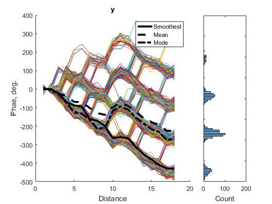 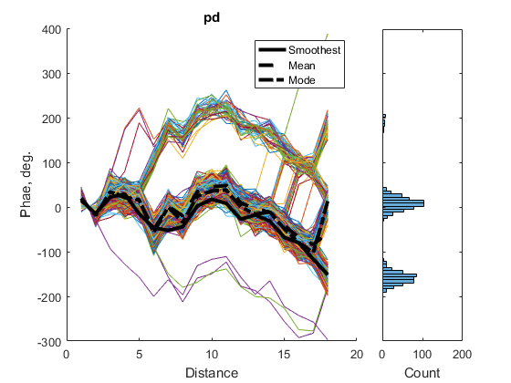